Week 10: Music, Markov, and Mazes
Last week we met graphs. This week — and for the rest of the term — we use them.
Two very different problems this week: can a computer compose music? and can a computer solve Sudoku? Beneath their very different surfaces, both reduce to the same question: how do you navigate a space of possibilities? The answer is graphs. Music generation, puzzle solving, route planning, optimization — they’re all graph problems in disguise. This week is where that realization lands.
Your Growing Toolkit
Every problem we solve uses some combination of these tools:
- Representation — how we encode meaning
- Collections — how we group things
- Control flow — how we make decisions and repeat
- Functions — how we name and reuse logic
- Abstraction — how we hide complexity
- Efficiency — how we measure cost
This week: Markov Chains + Depth-First Search — two elegant ways to navigate a graph of possibilities!
Weeks 10–14 are all about putting graphs to work on real problems: music generation, puzzle solving, geographic maps, route planning, optimization. The vocabulary from Week 9 (\(V\), \(E\), paths, search) is now your power tool. Every week adds a new application.
Tuesday: A Computer That Composes
Ada’s Prophecy
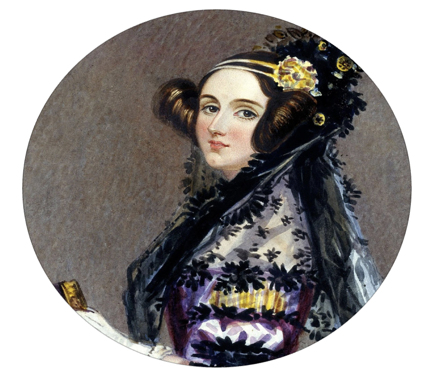
We opened with a remarkable quote. In 1842 — nearly a century before the first electronic computer — Ada Lovelace imagined what a programmable engine might do:
“Supposing… that the fundamental relations of pitched sounds… were susceptible of such expression and adaptations, the engine might compose elaborate and scientific pieces of music of any degree of complexity or extent.”
She was right. This week, we built exactly that.
Step 1: Listen to the Music
Before generating music, we need to understand it — mathematically.
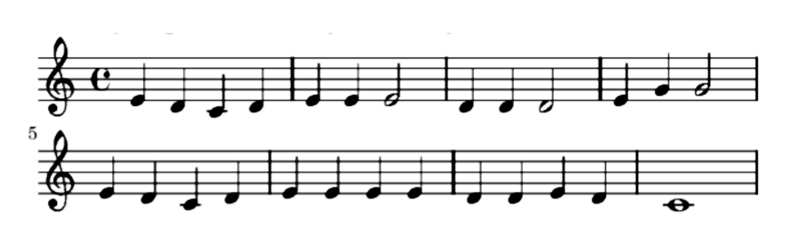
We started with a classic: Mary Had a Little Lamb. The first step was to build a tally:
| Note | Count |
|---|---|
| C | 3 |
| D | 10 |
| E | 11 |
| G | 2 |
Most notes in Mary are E or D. A random note generator that just sampled from this distribution would produce something that sounds like the song — but without any sense of melody.
Step 2: Capture the Transitions
The secret ingredient isn’t which notes appear — it’s which notes follow which.
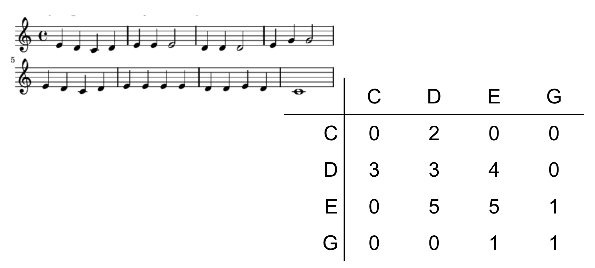
Instead of counting each note in isolation, we count pairs: how often does E follow D? How often does D follow E? This gives us a transition table — a complete picture of the song’s structure.
The transition table stores, for each note, the probability that the next note will be each possible note. Given you just played D, what are the odds the next note is E? D again? C?
This is all the information you need to generate new music that “sounds like” the original!
Step 3: Build the Generator
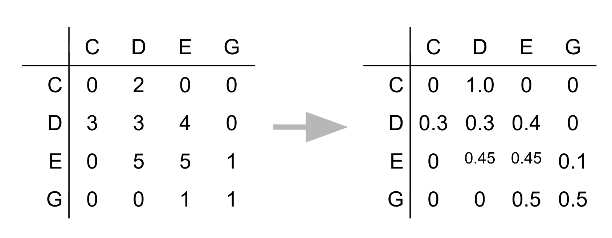
The algorithm is beautifully simple:
- Start on any note
- Look up that note’s row in the transition table
- Pick the next note randomly, weighted by the transition probabilities
- Repeat
The result is a sequence of notes that respects the statistical structure of the original melody — not a copy, but a plausible variation.
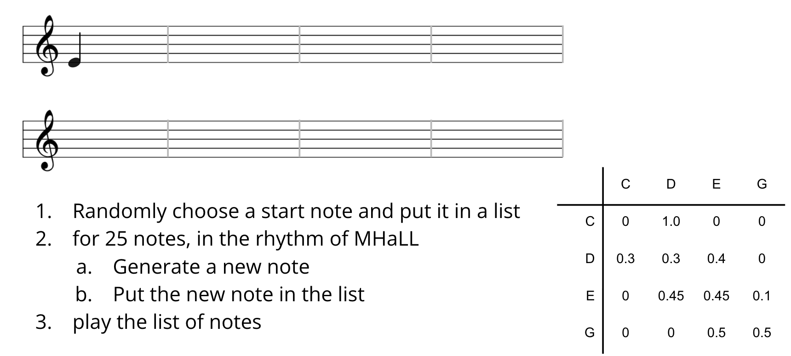
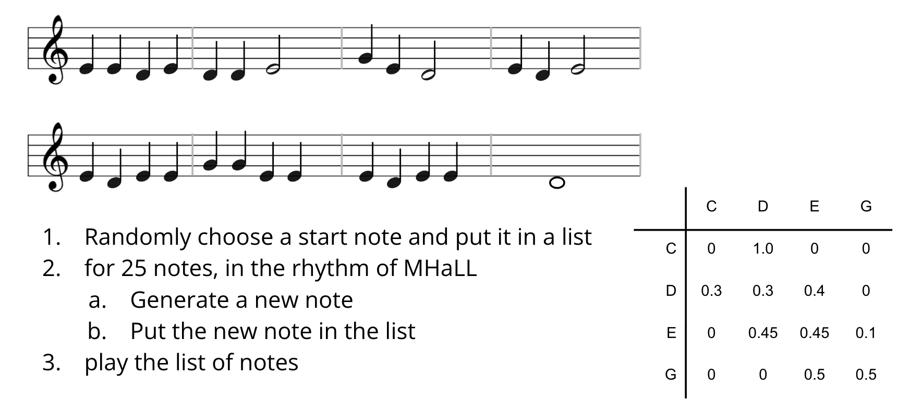
The Big Idea: Markov Chains
What we just built has a name. A Markov chain is a random process where:
The next state depends only on the current state — not on any history before it.
This “memoryless” property is what makes Markov chains tractable. We don’t need to remember the whole song so far — just the current note.
- 🔍 PageRank — Google’s original search algorithm models a random web surfer following links. Pages with high probability of being visited get high rank.
- 💬 Natural language processing — Some words are more likely to follow others. “I just ate the whole desert” is probably a spelling error. *“For dinner I ___“* is probably followed by “ate”.
- 🧬 DNA sequencing — Nucleotide transitions follow statistical patterns used for alignment and error correction.
- ⚗️ Chemical reaction simulation — Reaction probabilities model which molecules form next.
Markov Chains Are Graphs
Here’s the most elegant part. A transition table like ours can be read as an adjacency matrix — the representation of a graph!
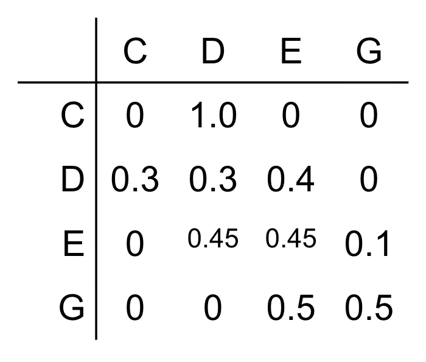
Vertices: Each musical note (C, D, E, G, …) is a vertex.
Edges: There’s a directed edge from note \(u\) to note \(v\) if the transition probability from \(u\) to \(v\) is non-zero — i.e., \(v\) ever follows \(u\) in the song.
Special characteristics: The graph is directed (edges have direction — “E follows D” is different from “D follows E”) and weighted (each edge carries a probability). The probabilities on outgoing edges from each vertex sum to 1.
A random walk on this graph is the Markov chain. See it in action at setosa.io/markov.
Thursday: Solving Sudoku with Search
Rush Hour: A Graph in Disguise
We started Thursday by revisiting a puzzle from Week 9 — Rush Hour — but now with fresh eyes.


\(V\): Every possible arrangement of all cars on the board is a vertex — a state.
\(E\): Two states are connected by an edge if you can get from one to the other with a single legal move.
Path: A sequence of connected states — i.e., a solution to the puzzle!
This is a state space graph — a graph where vertices are configurations and edges are transitions. To solve Rush Hour, you just need to find a path from the starting state to a winning state. Graph search is problem solving.
Representing Sudoku
Sudoku is a different puzzle, but the same idea applies. We need a representation — a way to describe the state of the game in a form the computer can work with.
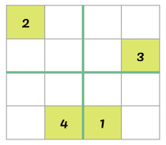
A natural representation: a 2D array (list of lists) where each cell contains either a number (already filled) or 0 (empty).
The state space is the collection of all possible board configurations — every way the grid could possibly be filled in. Each configuration is a state.
A vertex is any board configuration (partially filled or complete).
An edge (u, v) means: board \(v\) can be reached from board \(u\) by filling in one empty cell with a valid number.
How many neighbors does a given state have? At most 4 (for a 4×4 grid) — one for each valid digit that could go in the next empty cell.
The State Space Is Enormous
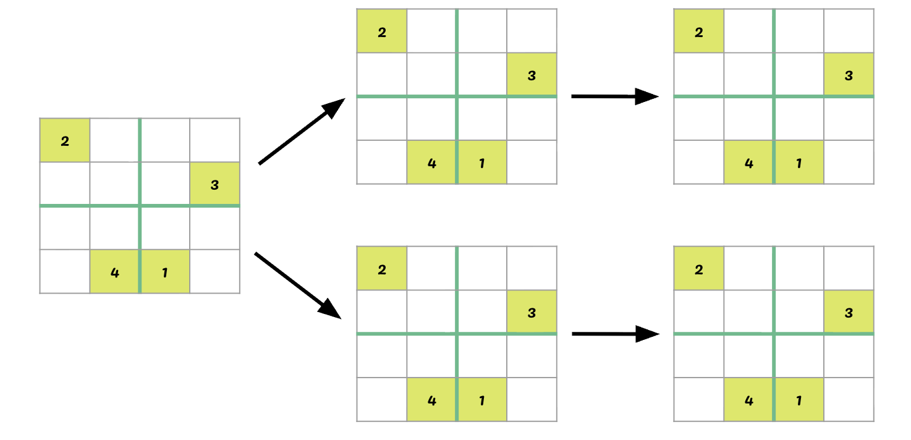
We can’t try every possible board — there are far too many. For a 9×9 Sudoku, the number of candidate grids is astronomical.
Instead, we use depth-first search (DFS): commit to a choice, go as deep as possible, and backtrack when we hit a dead end.
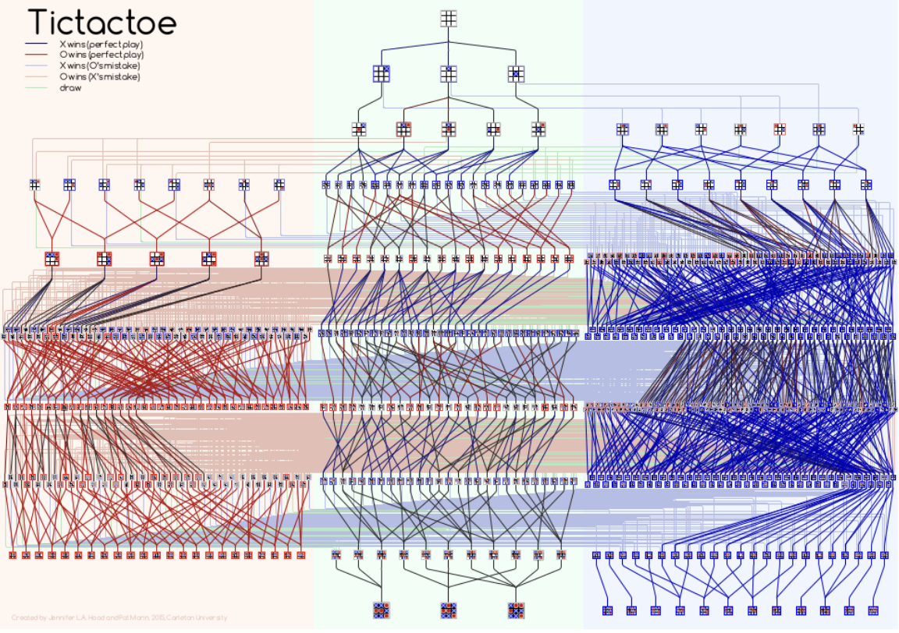
(Even TicTacToe — a tiny puzzle — has a surprisingly big state space tree!)
Depth-First Search: Ariadne’s Thread
DFS has a beautiful intuition: it’s like exploring a maze with a ball of thread.
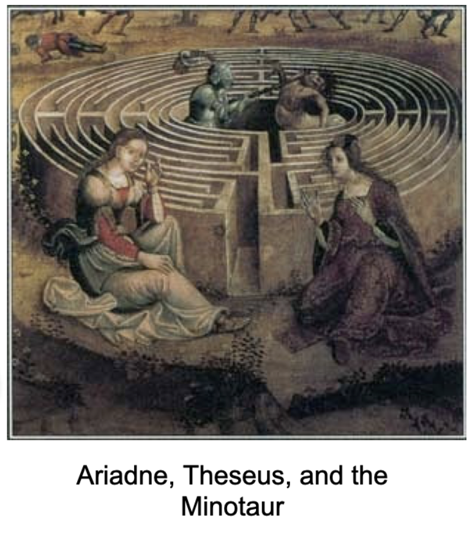
In the myth, Ariadne gives Theseus a thread so he can trace his path and back up when he reaches dead ends. DFS does the same thing computationally — it dives deep, and when it gets stuck, it backtracks along the same path.
The algorithm:
- Move forward through states until you can’t go any further
- If the board is complete — you win! 🎉
- If the board is stuck — back up and try the next option at the most recent choice point
Stacks: DFS in Code
How do we implement “go deep, then backtrack”? With a stack.
A stack is the programmatic manifestation of Ariadne’s thread. It works on a last-in, first-out (LIFO) principle — just like a stack of plates, or a PEZ dispenser:
push(item)— add to the toppop()→item— remove from the top
In Python, we use a deque with append() and pop():
stack = deque()
stack.append(item) # push
item = stack.pop() # pop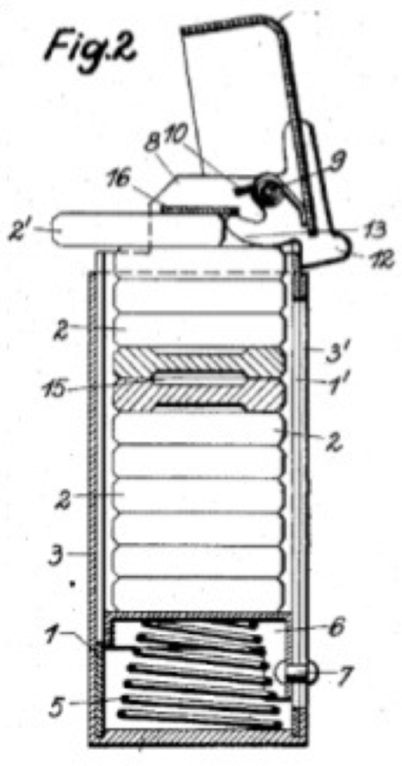
Compare to the queue (FIFO) we used for flood fill in Week 8:
| Data Structure | Order | Use | |
|---|---|---|---|
| BFS | Queue (popleft) |
Broad first | Shortest path |
| DFS | Stack (pop) |
Deep first | Exhaustive search / backtracking |
One swap — popleft() ↔︎ pop() — and you get a completely different exploration strategy!
Validating a Move
Before placing a number in Sudoku, we need to check it’s valid. The rules say each number must appear exactly once in its row, column, and block.
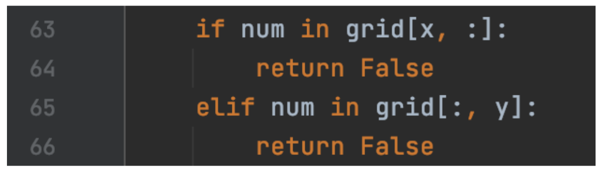
For a candidate value num at position (x, y):
- Row check: is
numalready ingrid[x]? - Column check: is
numalready ingrid[:, y]? - Block check: is
numin the 3×3 (or 2×2) sub-grid containing(x, y)?
For the block check, we need to find the region bounds. This is a satisfying little puzzle in itself!
Finding the Block
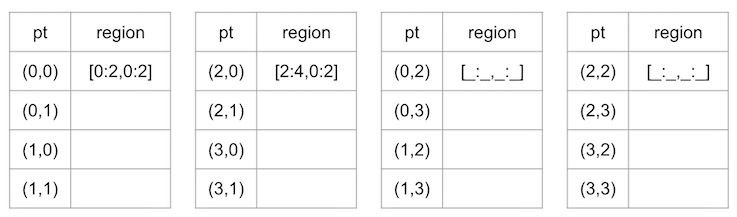
Given position \((x, y)\) in an \(r^2 \times r^2\) grid, the block it belongs to has bounds:
\[\text{row range: } \left[\lfloor x/r \rfloor \cdot r \ : \ \lfloor x/r \rfloor \cdot r + r\right]\] \[\text{col range: } \left[\lfloor y/r \rfloor \cdot r \ : \ \lfloor y/r \rfloor \cdot r + r\right]\]
In Python, x // r gives the integer quotient. For a 4×4 grid (\(r = 2\)): position \((3, 1)\) belongs to the block starting at row \(\lfloor 3/2 \rfloor \times 2 = 2\), column \(\lfloor 1/2 \rfloor \times 2 = 0\).
Python tidbit: num in grid[r0:r1, c0:c1] checks membership in a 2D region — exactly what we need!
Linearizing the Grid
One more elegant puzzle: as we search, we want to iterate through all cells in order. Instead of nested loops over rows and columns, we can use a single integer p from 0 to \(W \times H\):
def postup(p):
x = p // states # row
y = p % states # column
return (x, y)A single number encodes a 2D position! This // and % pattern — integer division and remainder — appears constantly in programming whenever you need to convert between 1D and 2D indexing.
Think of p as a counter that scans left-to-right, top-to-bottom. Every time it passes states cells, it moves to the next row. p // states counts how many full rows have passed; p % states counts the position within the current row.
What’s Next?
The pattern is set. Every problem from here has the same shape: define your states (vertices), define your transitions (edges), search the graph.
| Week | Problem | Graph angle |
|---|---|---|
| 10 | Music generation, Sudoku | Markov chains, state space search |
| 11 | Geographic maps | Road networks, shortest paths |
| 12 | TSP / errand planning | Complete graphs, optimization |
| 13–14 | Visualization, projects | Putting it all together |
Week 11 takes graphs from abstract to geographical — actual road networks, GPS coordinates, real shortest-path algorithms. Project 3 is a workout route planner for UBC campus!
Project 2 deadline is coming up — finish strong! 💪